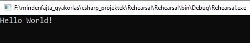

A témakör célja, hogy megismerkedjünk a C#-pal.
- Szintaktika szabályok.
- Az utasításokat mindig le kell zárni a ; karakterrel!
- Törekedjünk az "egy sor = egy utasítás" elv betartására!
- A szabvány "Hello World!" program C# nyelven?
- 1-5.sor: a FCL-ből alapból megkapott névterek (framework). Törölhetünk belőlük (fogunk is) és felvehetünk újakat. Amire kezdetben szükségünk van az a System névtér. Ebben van benne a Console osztály a szükséges metódusokkal.
- 6.sor: a fehér szóközöket (white space) (szóköz, sortörés, behúzás) a szerkesztő a fordítás során figyelmen kívűl hagyja. Csak a kód jobb áttekinthetőségét szolgálják.
- 7.sor: az általunk létrehozandó névtér. A nevének nem kötelező megegyeznie az állomány nevével, de nagyon praktikus lesz a későbbi hívások esetén. A szerkesztő mindig az állomány nevét adja neki. Ez tartalmazza az általunk létrehozott osztályokat (class). Lesznek még egyéb konstrukciók is, de most csak erre van szükségünk.
- 8-17., 10-16. és 12-15.sor: a kódot blokkokba szervezzük, ehhez használjuk a {}-kapcsos zárójel párokat. Minden ilyen blokk egy-egy hatókörnek (scope) felel meg.
- 9.sor: a programunk lelke, az az osztály, amely a Main metódust tartalmazza. A szerkesztő mindig a Program nevet adja neki.
- 11.sor: a Main metódus, a program "belépési pontja". A fordító ezt a metódust keresi, hogy innen kezdje a feldolgozást. Vannak előtte úgynevezett módosító szavak, majd utána a kötelező ()-párban egy paraméter. Ezt a paramétert is a szerkesztő helyezi ide. Ez viszont nem kötelező, azaz kitörölhető, ha zavaró!
- 13-14.sor: maga a C#-kód, amit már mi írtunk. A második sor azért kell, hogy a konzol ne zárodjon be a futtatás eredményének megmutatása után!
- Szabványos kimenet/kiíratás a konzolra!
- System.Console.WriteLine() === Console.WriteLine();
- System.Console.Write() === Console.Write();
A következőkre nagyon figyeljünk:
Hozzunk létre egy C# konzolos alkalmazást Rehearsal néven, majd a megnyíló szerkesztői ablakba egészítsük ki a kódot:

Majd a futtatás után (Start) kapjuk egy konzolos felületen:

Vizsgáljuk meg a kódot soronként:
Ehhez a következő utasításokat használjuk:
Az első esetben nem importáltuk be a System névteret! Mindig tegyük meg.
Ha nem írunk be semmit a ()-ba, akkor simán sort emelünk.
Ha van valamilyen tartalma, akkor kiírja a konzolra, és utána emel sort.
Ekkor kell valamit tenni (szöveg, változó) a ()-ba, mert hibát fog jelezni!
A kiíratás után nem emel sort, hanem a kurzort a sor végén hagyja! Erre nagyon figyeljünk!